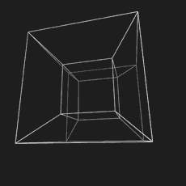

Found on Jupiter's moon Europa in its Conamara Chaos region. Studies show the Artifact is a tesseract-mechanism which is possibly "locked" in 3D space while moving along in lockstep with our present. What we do know for sure is that it streams information from hundreds–possibly even billions–of years in the future. Currently, the information decoded by QCing (quantum computing) can only be observed in audio. Although some AI systems are reporting a likelihood of vetting visual information as well. These audio streams are mostly just passing thoughts. Still, as benign as these thoughts may be in their present time, even the most basic information from the future describing life throughout the Milky Way Galaxy is invaluable to us today.
Unfortunately, general consensus indicates that despite the rather utopian state of humanity in 2280, we eventually will return to our "old ways" of exploitation, greed, and varying levels of manufactured strife.
